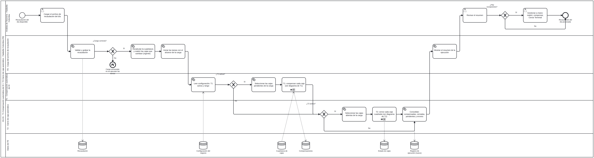
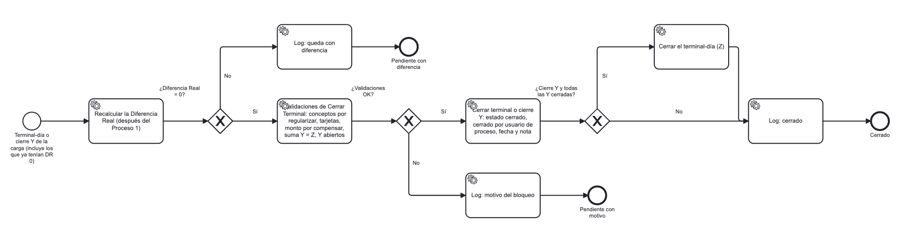
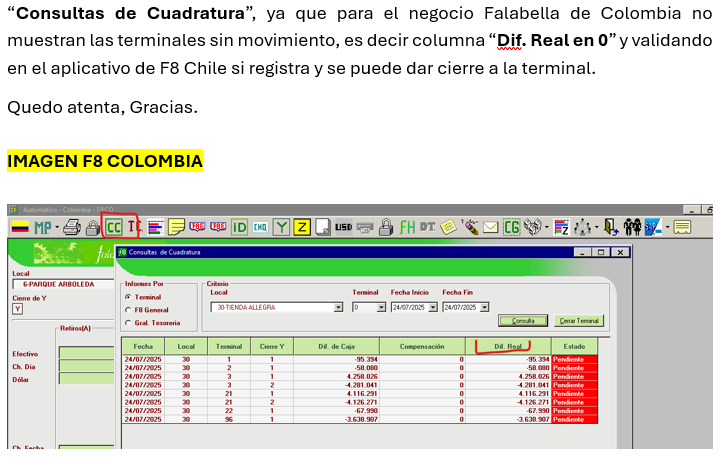
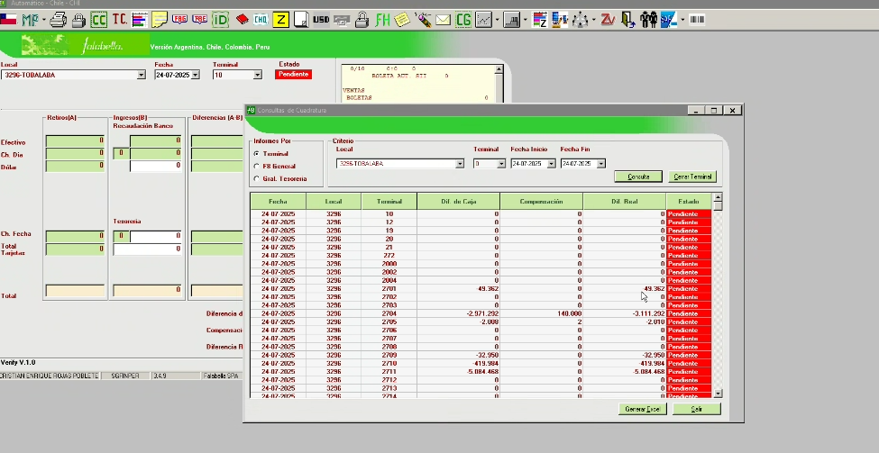
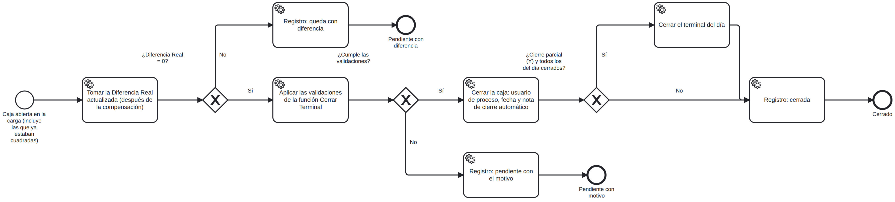
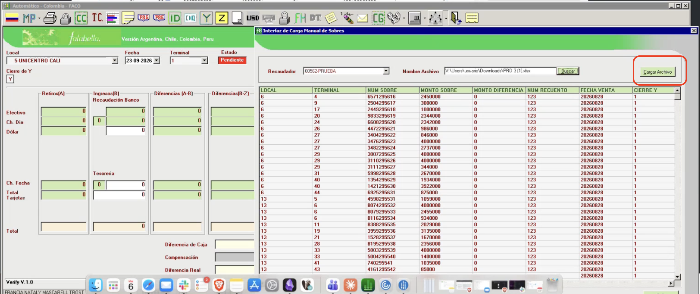

| Historia principal | FSCC-12901 · Compensación automática de DI dentro de un rango — Falabella Colombia |
| Subtarea previa | FSCC-12957 · HU-01-T1 Compensación automática de DI (documento aparte) |
| Sistema | f8a.exe (VB6, FTEPROD/recaudacion.vbp) + Oracle 10g, esquema INTRANETTS |
| Fuentes | Código VB6; base de test sgfnprds (06-10-2026, solo lectura); Jira; docs/CierreCaja_FACO_Reglas.md, docs/FSCC-12901_Analisis.md |
| Fecha | 06-10-2026 |
docs/sql/FSCC-12958/. Las secciones 5 a 7 describen el diseño anterior (llamada desde Form133) y quedan como referencia. Ajuste DF-SCC: cajas sin movimiento y Consultas de Cuadratura (Form43) en la sección 12.5.vta_FACOtermstaty), igual que Form3Y.CierraTerminal, y no toca la Z (vta_FACOtermstat). Todo lo que este documento dice sobre el cierre de la Z (sección 4.2, reglas RZ, fase Z del algoritmo, casos de la Z) queda sin efecto. Ver la sección 12.6.| Campo | Detalle |
|---|---|
| Objetivo | Después de T1, cerrar automáticamente cada caja de la carga que quede con Diferencia Real 0 y cumpla todas las validaciones de "Cerrar Terminal". |
| Hace | Recorre cada caja abierta de la carga (incluidas las que ya estaban cuadradas) · recalcula DR · aplica validaciones · cierra la Y · cuando todas las Y del terminal-día están cerradas, valida y cierra la Z · registra el motivo de cada caja no cerrada. |
| No hace | No crea compensaciones (eso es T1). No reabre cajas cerradas. |
| Disparador | Inmediatamente después de T1, en la misma llamada desde Form133. |
| Criterios de aceptación cubiertos | CA 1 (parte cierre), 2, 4, 9 de FSCC-12901. |
| Diagramas | "Flujo general de la historia" y "Proceso 2 · Cierre de caja automático" (docs/Requeriemintos-FSCC-12901). Reproducidos y contrastados en la sección 11. |
| Precondiciones (diagrama general) | (1) La carga fue correcta. (2) El parámetro T2 activa = S. Si T1 está inactiva, T2 corre igual sobre las cajas abiertas de la carga. |
| Marca del cierre (diagrama proceso 2) | "Estado cerrado, cerrado por usuario de proceso, fecha y nota": ter_estado = 1, ter_cerradopor = usuario de proceso, ter_notas = texto con fecha y hora (la columna de fecha no existe; ver P4). |
Magnitud global: media-alta. Hay que portar a PL/SQL unas 20 validaciones que hoy viven en dos formularios VB6 (Form3Y para la Y y Form3 para la Z), incluida una validación dinámica (Z = ΣY) que depende de la tabla de configuración vta_paint_z. Existe un paquete de cierre automático de Colombia que conviene extender, pero su código no está visible.
| # | Componente | Tipo | Acción | Complejidad |
|---|---|---|---|---|
| 1 | Validaciones de cierre de Y (RY) | PL/SQL | Crear / extender paquete existente | Media |
| 2 | Validaciones de cierre de Z (RZ), incluida Z = ΣY dinámica | PL/SQL | Crear / extender | Alta |
| 3 | Procedimiento de cierre automático (orquestación) | PL/SQL | Extender PKG_F8_FACO_CIERRE_TER_PM_AP o crear | Media |
| 4 | Fecha de cierre | DDL | Agregar columna (solo si P4 lo pide) | Baja |
| 5 | Log/resumen | Tabla de T1 | Reutilizar (log_proceso='T2') | Baja |
| 6 | Llamada y resumen en el exe | VB6 Form133 + form resumen de T1 | Modificar | Baja |
| Objeto | Qué se sabe |
|---|---|
PKG_F8_FACO_CIERRE_TER_PM_AP (INTRANETTS, 2022-02-09) | Especificación: CIERRE_TERMINAL(FECHA_PROCESO), VALOR_COMPENSADO(fecha, local, terminal, COD_SECY), VALIDA_CONCEPTO(fecha, local, terminal, tipo, COD_SECY). Trabaja por cierre Y. Cuerpo no visible con el usuario de test. |
| Evidencia en datos (test) | 556 Y y 117 Z cerradas con ter_cerradopor='AUTOMATICO' entre 2022 y el 23-09-2026. 166 de 187 terminales Autopago (vta_FACOterminales.ter_tipo=2) y el terminal 3016 de muchos locales. Las Y cerradas así tienen montos en 0. |
| Quién lo ejecuta | No lo llama el exe; no hay jobs visibles. Desconocido (P14). |
| Mantenedor de tipos de terminal | Form50 ("Terminales POS MOBILE y AUTOPAGO"): ter_tipo 0 normal, 1 POS Mobile, 2 Autopago. |
AUTOMATICO o el de proceso de T1, según P5) para que haya un solo cierre automático en Colombia. Requiere obtener primero su cuerpo (DBA) para no romper el cierre actual de Autopago.Fuente: Form3Y.CierraTerminal (Form3Y.frm:2801) para la Y y Form3.CierraTerminal (Form3.frm:3439) para la Z. SQL completo de cada una en docs/CierreCaja_FACO_Reglas.md §3–§6. Se evalúan en orden; la primera que falla bloquea y su mensaje va al log.
| ID | Regla | Bloquea si | Mensaje (log) | Nota para el proceso |
|---|---|---|---|---|
| RY-01 | Cheque a fecha | Σ VTA_FACOCHEQUES tipo 1 ≠ Σ vta_FACOtesor.tes_chefecha (día completo) | "Existe diferencia para el concepto cheques a Fecha…" | D7: compara todo el día aunque se cierre una Y |
| RY-02 | Y no cerrada | ter_estado > 0 (1, 2, 3) | "Terminal ya se Encuentra Cerrado" | Impreso (2) y Sin datos (3) también bloquean |
| RY-03 | Sin conceptos pendientes en la Y | Existe SN, AF, ND, FN, NP, BF, CR, CT, CA (cartaaviso), DP con mov_regul nulo/' '/'N' y mov_cierrey = Y | "Falta regularizar … , o elimine el registro" | CA4: el resumen debe decir qué concepto |
| RY-05 | DR = 0 | DR (función de T1) ≠ 0 | "Falta Monto por Compensar" | Reutilizar FN_F8_FACO_DIF_REAL_Y |
| RY-06 | Fórmula ZZZ de la Y | Solo si el perfil tiene opción 103: F7−F6−…−F1 ≠ 0 (vta_paint_z.vta_validadorzzz) | "Error, Y descuadrada…" | D1: hoy el exe pasa el local en vez de la Y ⇒ no valida. Decidir |
update vta_FACOtermstaty
set ter_estado = '1', ter_cerradopor = :usuario_proceso,
ter_notas = substr('CIERRE AUTOMATICO FSCC-12901 ' || to_char(sysdate,'dd-mm-yyyy hh24:mi')
|| nvl2(ter_notas, ' | ' || ter_notas, ''), 1, 2500)
where ter_fecha = :f and ter_local = :l and ter_terminal = :t and ter_cierrey = :y;
Form3.CierraTerminal.| ID | Regla | Bloquea si | Nota |
|---|---|---|---|
| RZ-01 | Cheque a fecha (día) | Igual a RY-01 | Exentos perfiles 8, 10, 12 → P5 |
| RZ-02 | Z no cerrada | ter_estado > 0 | |
| RZ-03 | Sin conceptos pendientes del día | Mismos tipos que RY-03, sin filtro de Y | PM, DE, VC son solo de Chile |
| RZ-05 | DR de la Z = 0 | Versión Z de la función (día completo, tiporeg='F8') | La Z no lleva DI: si ≠ 0 queda Pendiente con motivo |
| RZ-06 | Z = Σ Y | Por cada campo de vta_paint_z (FACO, sin pop-up, vta_order_z fuera de 56..76): Σ campo Z ≠ Σ campo Y | SQL dinámico (EXECUTE IMMEDIATE) o lista fija de campos |
| RZ-07 | Todas las Y cerradas | Alguna Y con estado ≠ 1 | D2: si no hay Y, hoy deja pasar |
| RZ-08 | ZZZ de la Z | Opción 103 | P5 |
| RZ-09 | USD declarados = USD Prosegur | Opción 109: Σ(−recmex.mex_cantidad 305) + Σ(prd DOL) ≠ 0 | Base: FUN_F8_COMPENSACION_DI |
update vta_FACOtermstat
set ter_estado = '1', ter_cerradopor = :usuario_proceso,
ter_notas = substr('CIERRE AUTOMATICO FSCC-12901 ' || to_char(sysdate,'dd-mm-yyyy hh24:mi')
|| nvl2(ter_notas, ' | ' || ter_notas, ''), 1, 2500)
where ter_fecha = :f and ter_local = :l and ter_terminal = :t;
-- ter_fechacierre NO existe en Colombia: la fecha va en ter_notas (diagrama: "fecha y nota"), ver P4
Un proceso automático no tiene perfil. Opciones: (a) evaluar con el perfil del analista que ejecutó la carga (PERFILUSER, consultando vta_FACOrelpermen); (b) definir un perfil fijo de proceso. Consulta de permiso:
select 1 from vta_FACOrelpermen p, vta_FACOmenu m where p.mnu_codigo = m.mnu_codigo and p.per_codigo = :perfil and p.mnu_codigo = :opcion and p.rel_estado < 0; -- 103 ZZZ, 109 dólares
| Objeto (nombre sugerido) | Acción | Para qué |
|---|---|---|
PKG_F8_FACO_CIERRE_TER_PM_AP | Extender (recomendado) | Agregar PR_CIERRE_AUTO_CARGA que recorra las cajas de la carga; reutilizar VALOR_COMPENSADO y VALIDA_CONCEPTO si su lógica coincide con RY-03 / RY-05 (verificar con el cuerpo) |
FN_F8_FACO_DIF_REAL_Y (de T1) | Reutilizar + variante Z | RY-05 y RZ-05 |
FN_F8_FACO_VALIDA_Y / FN_F8_FACO_VALIDA_Z | Crear | Devuelven código de regla y mensaje de la primera que falla |
VTA_FACOLOG_PROC_AUTO (de T1) | Reutilizar | Resumen con log_proceso='T2', log_regla, log_mensaje |
ter_fechacierre en vta_FACOtermstat y vta_FACOtermstaty | Crear solo si P4 exige columna | CA1 "fecha de cierre". Alternativa sin DDL: fecha y hora en ter_notas (VARCHAR2 2500, existe) |
vta_FACOparam 1502 'DIA_T2' | Crear (lo inserta T1) | Interruptor "T2 activa" del diagrama general |
-- Solo si P4 = agregar columna alter table vta_FACOtermstat add (ter_fechacierre date); alter table vta_FACOtermstaty add (ter_fechacierre date);
SIN_LIBVTA), Y cerradas que recibieron sobres (P12, Y_CERRADA_CON_DIF).procedure pr_cierre_auto_carga ( p_ejecucion in number, -- id de la corrida de T1 (mismo resumen) p_fechadep in date, p_cod_recaud in varchar2, p_perfil in number, -- perfil del analista (P5) p_usuario in varchar2, o_y_cerradas out number, o_z_cerradas out number, o_no_cerradas out number);
| Archivo | Cambio |
|---|---|
FTEPROD/Form133.frm (CargarArchivo, :1671) | Tras la llamada de T1, llamar pr_cierre_auto_carga con el mismo id de ejecución, PERFILUSER y LOGINUSER. Solo Flg_Pais$="FACO". |
Formulario de resumen (de T1, ej. Form174) | Mostrar también las filas log_proceso='T2': cerradas Y/Z y no cerradas con regla y mensaje. |
Módulo1.bas | Misma subida de Gversion que T1 (se despliegan juntas). |
Form3, Form3Y, Form43) no se modifican: el cierre manual sigue igual. Si en el futuro se quiere que el cierre manual use el mismo PL/SQL (una sola fuente de verdad), sería otra historia.si parámetro DIA_T2 <> 'S' -> log T2_INACTIVA ; terminar
-- Fase Y
para cada Y del universo (orden fecha, local, terminal, cierrey):
savepoint y
select ter_estado from vta_FACOtermstaty ... for update nowait (si bloqueada -> log OCUPADA)
si ter_estado > 0 -> log RY-02 ; continuar
si no hay libvta Y -> log SIN_LIBVTA ; continuar
regla := FN_F8_FACO_VALIDA_Y(...) -- RY-01, RY-03, RY-05, (RY-06 según perfil)
si regla <> OK -> log NO_CERRADA (regla, mensaje) ; continuar
update termstaty -> estado 1, cerradopor
commit ; log CERRADA_Y
-- Fase Z
para cada terminal-día del universo:
savepoint z
select ter_estado from vta_FACOtermstat ... for update nowait
si alguna Y del terminal-día no está cerrada -> log RZ-07 ; continuar
regla := FN_F8_FACO_VALIDA_Z(...) -- RZ-01, 03, 05, 06, (08, 09 según perfil)
si regla <> OK -> log NO_CERRADA ; continuar
update termstat -> estado 1, cerradopor (+ fechacierre si P4)
commit ; log CERRADA_Z
| # | Caso | Esperado |
|---|---|---|
| 1 | Y compensada por T1 (DR 0), sin pendientes (CA1) | Y cerrada con usuario de proceso; si es la única Y, Z también |
| 2 | Límites −1.000 / 20.000 compensados por T1 (CA2) | Se cierran |
| 3 | Y con SN sin regularizar (CA4) | No se cierra; log RY-03 "Falta regularizar el Sobres No Enviado…" |
| 4 | Y ya cuadrada antes de la carga (CA9) | Se valida y se cierra |
| 5 | Cheque a fecha gestión ≠ tesorería | Log RY-01 |
| 6 | Y en estado 2 (Impreso) | No se cierra; log RY-02 |
| 7 | Terminal con 3 Y, una fuera de rango | 2 Y cerradas; Z no (RZ-07) |
| 8 | Todas las Y cerradas, Z ≠ ΣY en un campo | Z no; log RZ-06 con la glosa del campo |
| 9 | Todas las Y en 0 pero Z con DR ≠ 0 | Z no; log RZ-05 |
| 10 | Perfil con opción 109 y USD ≠ Prosegur | Z no; log RZ-09 |
| 11 | Y cerrada previamente que recibe sobre (P12) | Según decisión; mínimo en el resumen |
| 12 | Analista con la Y abierta en Form3Y mientras corre el proceso | Sin bloqueo: proceso cierra; con nowait: log OCUPADA |
| 13 | Doble ejecución sobre la misma carga | No reprocesa cerradas; sin errores |
| 14 | Terminal Autopago (ter_tipo 2) en la carga | Mismo resultado que el cierre AUTOMATICO actual (no romperlo) |
| 15 | Comparación con cierre manual | Para 10 cajas, el proceso bloquea con la misma regla que mostraría Form3Y/Form3 |
| ID | Tema | Propuesta | ¿Bloquea T2? |
|---|---|---|---|
| V1 | Cuerpo de PKG_F8_FACO_CIERRE_TER_PM_AP | Pedir al DBA | Sí |
| P14 | Quién/cuándo ejecuta hoy el cierre AUTOMATICO | Averiguar con DBA/operaciones; integrar en lugar de duplicar | Sí |
| P3 | Y primero, Z después; Z sin DI | Confirmar | Confirmar |
| P4 | Fecha de cierre: columna nueva o nota | Fecha y hora en ter_notas + log (el diagrama pide "fecha y nota"); columna solo si Auditoría la exige | Sí si se elige DDL |
| P5 | Perfil para validaciones 103/109 y exenciones RZ-01 | Perfil del analista que ejecuta la carga | Sí |
| P12 | Y cerradas que reciben sobres | No reabrir; informar en resumen | Confirmar |
| D1 | ZZZ de la Y hoy no valida (bug del exe) | Replicar el comportamiento (no validar) y abrir incidencia aparte | Confirmar |
| D2 | Z sin Y en libro de ventas | No cerrar automáticamente; dejar al analista | Confirmar |
| D7 | Cheque a fecha del día completo al cerrar Y | Replicar | No |
| N1 | Interruptor T2 activa | Parámetro 1502 'DIA_T2' (S/N) | Confirmar nombre |
| N3 | "Reabrir las cajas que cambian": hoy la carga solo reabre la Z | Reabrir también la Y del sobre (cambio en Form133.AbrirTerminal, documentado en T1) | Confirmar |
| N4 | Ramas que faltan en el proceso 2: error técnico, caja ocupada, Y sin libro de ventas | Agregarlas al diagrama (ya están en el algoritmo) | No |
| N5 | El diagrama cierra la Z sin sus validaciones propias | Ejecutar RZ antes de cerrar la Z | Confirmar |
Form3, Form3Y, Form43) que no comparten código; la nueva en PL/SQL sería la cuarta. Caso 15 obligatorio.vta_paint_z; un cambio de configuración cambia el resultado.FOR UPDATE NOWAIT y registro OCUPADA.alter table de fecha de cierre.UINTRANETTS.-- reabrir lo cerrado por una corrida (si no hubo envío contable)
update vta_FACOtermstaty y set ter_estado = 0, ter_cerradopor = null
where exists (select 1 from vta_FACOlog_proc_auto l
where l.log_ejecucion = :ejecucion and l.log_proceso = 'T2'
and l.log_resultado = 'CERRADA_Y'
and l.log_fecha_vta = y.ter_fecha and l.log_local = y.ter_local
and l.log_terminal = y.ter_terminal and l.log_cierrey = y.ter_cierrey);
-- ídem vta_FACOtermstat con log_resultado = 'CERRADA_Z' (log_cierrey null)
-- reabrir manualmente un terminal también es posible desde Form20 (reapertura)
Diagrama en la página siguiente (horizontal).

| Paso del diagrama | Hoy en el sistema | Qué implica para T2 |
|---|---|---|
| ¿Carga correcta? No → carga rechazada, no se ejecutan las tareas | Parcial (la carga puede quedar a medias) | T2 solo corre si la carga fue completa (N2, documentado en T1) |
| Recalcular la cuadratura y reabrir las cajas que cambian (vigente) | Solo reabre la Z | Sin N3, una Y cerrada que recibe sobres impide cerrar la Z (P12) |
| ¿T2 activa? → Seleccionar las cajas abiertas de la carga | Nuevo | Parámetro DIA_T2; universo de 5.2 |
| T2: cerrar cada caja cuadrada | Existe un cierre automático parcial (PKG_F8_FACO_CIERRE_TER_PM_AP) | Extenderlo (sección 3) |
| Consolidar: compensadas, cerradas, pendientes y errores → mostrar resumen | Nuevo | Log compartido con T1, log_proceso='T2' |
| Analista: gestionar a mano (reabrir, compensar, Cerrar Terminal) | Existe | Form20, Form4→Form38, Form3Y/Form3 |
| Datos: "Estado de cajas", "Registro de ejecución (nuevo)" | vta_FACOtermstat[y] · nuevo | UPDATE de estado/nota + log |

| Elemento del diagrama | Diseño (este documento) |
|---|---|
| Inicio: "Terminal-día o cierre Y de la carga (incluye los que ya tenían DR 0)" | Universo 5.2: primero las Y, después la Z del terminal-día |
| Recalcular la DR (después del Proceso 1) | FN_F8_FACO_DIF_REAL_Y (de T1); variante Z para la Z |
| ¿DR = 0? No → "queda con diferencia" → Pendiente con diferencia | Log NO_CERRADA, regla RY-05 / RZ-05 |
| Validaciones de Cerrar Terminal (conceptos, tarjetas, monto por compensar, suma Y = Z, Y abiertos) | Lista real de la sección 4: tarjetas no aplica; se agregan cheque a fecha, estado, ZZZ y dólares |
| ¿Validaciones OK? No → "motivo del bloqueo" → Pendiente con motivo | Log con log_regla y mensaje exacto del sistema |
| Cerrar terminal o cierre Y: estado cerrado, cerrado por usuario de proceso, fecha y nota | UPDATE de 4.1 (ter_estado, ter_cerradopor, ter_notas con fecha) |
| ¿Cierre Y y todas las Y cerradas? Sí → Cerrar el terminal-día (Z) | Ejecutar RZ antes de cerrar la Z (N5); si fallan, Z pendiente con motivo |
| Log: cerrado | Log CERRADA_Y / CERRADA_Z |
| No está en el diagrama | Ramas agregadas: OCUPADA (bloqueo), SIN_LIBVTA, ERROR, T2_INACTIVA (N4) |
El cierre automático se implementa completo en Oracle (compatible con 10.2; scripts sin prefijo de esquema). El proceso automático no depende del exe. Scripts en docs/sql/FSCC-12958/. Ajuste 06-10-2026 (DF-SCC): el exe sí cambia en un punto: Form43 (Consultas de Cuadratura) delega en el mismo paquete el cálculo de sus columnas y el botón "Cerrar Terminal" para Colombia (sección 12.5).
Form133 / Form21 / Form124 ... --INSERT--> VTA_FACOPRD
| TRG_VTA_FACOPRD_CIERRE_AI (tiporec F8 y DOL)
v
VTA_FACOPRD_CIERRE (cola, estado P)
|
job externo --> PKG_F8_FACO_CIERRE_AUTO.PRC_CIERRE_AUTOMATICO
| por cada cierre Y pendiente: estado -> DR = 0 -> validaciones -> cierra Y
| por cada terminal-dia tocado: todas las Y cerradas -> DR Z = 0 -> validaciones -> cierra Z
v
VTA_FACOTERMSTATY / VTA_FACOTERMSTAT + VTA_FACOLOG_CIERRE_AUTO
| Tema | Decisión |
|---|---|
| Validaciones que dependen del perfil (103 ZZZ, 109 dólares, exención del cheque a fecha) | Flags en VTA_FACOPARAM tipo 1502: CA_VAL_CHEQ (S), CA_VAL_ZZZ (N), CA_VAL_USD (N) |
| Usuario del cierre | ter_cerradopor = 'PROC_CIERRE_AUTO' (distinto del AUTOMATICO de Autopago) |
| Cierre de la Z | Form3.CierraTerminal |
| Fecha y nota | ter_notas = 'CIERRE AUTOMATICO FSCC-12958 dd-mm-yyyy hh24:mi | nota anterior' (sin DDL) |
| Entregable | Solo scripts; los ejecuta el DBA |
| Script | Objeto | Descripción |
|---|---|---|
01_tabla_homologa.sql | VTA_FACOPRD_CIERRE + SEQ_VTA_FACOPRD_CIERRE | Homóloga de VTA_FACOPRD (tipos heredados por CTAS) con columnas de control: pcr_estado P/C/O/V, ejecución, resultado, mensaje e intentos |
02_log.sql | VTA_FACOLOG_CIERRE_AUTO + secuencia | Registro de ejecución: nivel Y (y "-" para inicio/fin), DR, resultado, regla y mensaje |
03_parametros.sql | VTA_FACOPARAM 1502 | CA_ACTIVO, CA_VAL_CHEQ, CA_VAL_ZZZ, CA_DECIMAL, CA_DIAS, CA_SIN_SOBRE (CA_VAL_USD eliminado el 07-10: solo servía para RZ-09) |
03b_vista_cajas.sql (DF-SCC) | VTA_FACOV_CAJAS_CIERRE | Universo común de T1 y T2: cierres Y de la cola (origen COLA) + cierres Y abiertos sin sobres del mismo local y fecha de venta de la carga, con libro de ventas (origen SIN_SOBRE, si CA_SIN_SOBRE = S) |
03c_permiso_cc.sql (DF-SCC) | VTA_FACOMENU / VTA_FACORELPERMEN 1515 | Opción "Cerrar Terminal desde Consulta Cuadratura", que no existía en FACO. Se crea deshabilitada; se habilita por perfil |
04_trigger.sql | TRG_VTA_FACOPRD_CIERRE_AI | AFTER INSERT por fila: clona el sobre en la cola. No bloquea la carga si falla (decisión a revisar) |
05/06_pkg_cierre_auto | PKG_F8_FACO_CIERRE_AUTO | PRC_CIERRE_AUTOMATICO (job), PRC_CIERRE_RANGO (Form43), FN_DIF_REAL, FN_DIF_CAJA, FN_COMPENSADO, PR_VALIDA_Y, FN_PARAM. Desde el 07-10 sin PR_VALIDA_Z ni funciones de la Z |
07_grants_sinonimos.sql | Grants y sinónimos | Para UINTRANETTS o el usuario del job |
08_pruebas.sql | — | Compilación, comparación de la DR con la F8, validaciones sueltas, conciliación del trigger, ejecución y matriz de 17 casos |
99_rollback.sql | — | Reapertura de una ejecución y desinstalación |
| Nivel | Secuencia |
|---|---|
| Y | Bloqueo NOWAIT (OCUPADA) → RY-02 estado (YA_CERRADA, no se reabre) → libro de ventas (SIN_LIBVTA) → RY-05 DR = 0 (CON_DIFERENCIA) → RY-01 cheque a fecha* → RY-03 conceptos SN, AF, ND, FN, NP, BF, CR, CT, CA, DP → RY-06 ZZZ* → cerrar Y |
| Z (eliminado 07-10-2026) | Bloqueo → RZ-02 estado → RZ-07 Y abiertas → RZ-05 DR de la Z → RZ-01 cheque* → RZ-03 conceptos del día → RZ-06 Z = ΣY (dinámico, VTA_PAINT_Z) → RZ-08 ZZZ* → RZ-09 dólares* → cerrar Z |
* Según flag. Las cajas con diferencia, bloqueadas, sin libro de ventas, ocupadas o con error quedan en estado P y se reevalúan en la siguiente ejecución (hasta CA_DIAS). Así, si el analista compensa o regulariza, el ciclo siguiente las cierra.
PRC_CIERRE_AUTOMATICO es el único punto de entrada: marca omitidas y vencidas en la cola → llama a PKG_F8_FACO_COMPENSA_DI.PRC_COMPENSA_DI (T1, si CA_DI_ACTIVO = S) → cierra Y y Z (T2, si CA_ACTIVO = S). Los interruptores son independientes y un error en T1 no detiene T2.log_proceso (T1 / T2 / CC = botón Cerrar Terminal de Form43).docs/sql/FSCC-12901_T1_T2/ con INSTALAR.sql. El orden es: especificaciones de T2 y T1 → cuerpo de T1 → cuerpo de T2 → trigger.Origen. El documento funcional DF-SCC-vf Falabella CO (Mejoras F8 y compensaciones menores), hoja F8-LV-CMP-TES, fila 12, pide que la pantalla Consultas de Cuadratura de Colombia muestre las cajas sin movimiento (Dif. Real en 0), como en F8 Chile, y que esas cajas se puedan cerrar, considerando el cierre automático de terminales con Diferencia Real 0. El objetivo declarado es evitar el archivo "dataload" de cierre de cajas. La fila 57 (DI automática de −1.000 a 20.000) corresponde a T1 y no cambia el diseño. Las filas 34, 40, 46 y 52 quedan fuera de FSCC-12901.


PRD 3.xlsx (archivo real de carga de Form133): 486 sobres, 27 locales, fecha de venta 20260828, todos con cierre Y = 1, 357 cajas; sin diferencias ni duplicados. Confirma el formato de 8 columnas y que el volumen de una carga es manejable. Las cajas que no reciben sobres no aparecen en la carga y, por lo tanto, nunca entraban a la cola del trigger.
| Objeto | Cambio |
|---|---|
VTA_FACOV_CAJAS_CIERRE (nueva vista) | Universo común de T1 y T2 (cola + cajas sin sobres del mismo local y día). T1 y T2 la recorren en lugar de la cola directa |
CA_SIN_SOBRE (parámetro 1502, S) | Interruptor de la rama SIN_SOBRE |
PKG_F8_FACO_CIERRE_AUTO | Cálculo separado en pr_cuadratura (misma fórmula); nuevas fn_dif_caja y fn_compensado (columnas de Form43); nuevo prc_cierre_rango (botón Cerrar Terminal); log_proceso CC; nota "CIERRE CC FSCC-12901" |
PKG_F8_FACO_COMPENSA_DI (T1) | Recorre la vista: las cajas sin sobres también reciben la DI automática |
Opción 1515 en VTA_FACOMENU / VTA_FACORELPERMEN | Verificado en test: no existía en FACO. Sin ella el botón queda oculto |
prc_cierre_rango(p_fecha_ini, p_fecha_fin, p_local, p_terminal, p_usuario, o_ejecucion, o_cerradas, o_no_cerradas): fechas en texto yyyymmdd, terminal 0 = todos. Cierra los cierres Y abiertos con libro de ventas del rango, con las mismas reglas RY y flags del proceso automático (desde el 07-10 no cierra la Z). No ejecuta T1 ni depende de CA_ACTIVO, porque es una acción manual del analista. ter_cerradopor queda con el usuario del analista (LOGINUSER).
FTEPROD/Form43.frm (solo Flg_Pais$ = "FACO")| # | Lugar | Cambio |
|---|---|---|
| B1 | Form_Load | Como Chile: combo Terminal visible; "Cerrar Terminal" solo con el permiso 1515 |
| B2 | OptionInforme_Click, Case Else | En FACO el botón ya no aparece sin permiso (hallazgo B4, visible en la imagen de Colombia) |
| B3 | Command2_Click | FACO + informe "Terminal" → SubBuscarOpcionFACO |
| B4 | SubBuscarOpcionFACO (nuevo) | Cierres Y con libro de ventas del rango, local y terminal (desde el 07-10 sin filas Z); columnas con fn_dif_caja, fn_compensado y fn_dif_real; muestra todas las filas, incluidas las de Dif. Real 0 |
| B5 | Command4_Click | FACO sale de la rama ARG/SFCL/FACO/HTPE (queda comentada) y llama a CierreTerminalFACO |
| B6 | CierreTerminalFACO (nuevo) | Confirmación → ADODB.Command a prc_cierre_rango (patrón de Form173) → refresco → resumen "Cerrados / No cerrados / ejecución". Errores con SystemMsg + frmLogOraError |
Respaldo previo: FTEPROD/Form43.frm.bak_FSCC-12901. Cambios marcados con 'CK: FSCC-12901; el código anterior queda comentado. El archivo conserva Windows-1252 y CRLF. No se compiló: no hay VB6 en el equipo de análisis.
docs/sql/FSCC-12901_T1_T2/INSTALAR.sql (incluye 03b y 03c) y otorgar permisos con el paso 09 al usuario de la conexión [CONNECT] del exe.Form47 o el UPDATE de 03c).f8a.exe con el nuevo Form43, subir Gversion (Módulo1.bas) y vta_parametros.vta_ultversion de cada país al publicar. El cambio solo afecta a FACO, pero el exe es único.Form43 en FACO falla con "Problemas de comunicación").Fuente: docs/Requeriemintos-FSCC-12901/Doc-Actualizado/. La HU FSCC-12901.doc (actualizada el 06-10) agrega:
Form133).Las subtareas FSCC-12957/12958 no cambian su texto; el DF-SCC y PRD 3 son idénticos a los ya analizados.

Verificado en el código y en test:
Form3Y.CierraTerminal solo actualiza vta_FACOtermstaty; ninguna rama FACO usa Form3.CierraTerminal.| Decisión (07-10-2026) | Efecto |
|---|---|
Solo Y: no se toca vta_FACOtermstat | Se eliminan pr_procesa_z, pr_valida_z, fn_msg_z_suma_y (RZ-06), fn_msg_y_abiertas (RZ-07), fn_dif_dolares (RZ-09) y el parámetro CA_VAL_USD. fn_dif_real, fn_dif_caja y fn_compensado exigen el número de Y. prc_cierre_rango y Form43 trabajan solo con Y. El rollback ya no reabre la Z |
| Disparo: se mantiene el job externo (cola + trigger) | Form133 no llama al SP. La HU pide ejecutar "al momento de la carga": el job debe agendarse inmediatamente después de la carga (punto abierto con negocio) |
| Sin resumen en pantalla | El resumen se consulta en VTA_FACOLOG_CIERRE_AUTO por SQL (punto abierto con negocio: la HU pide "emitir un resumen") |
Form133.AbrirTerminal no se toca | La carga sigue reabriendo o creando la Z (nota 'CARGA MANUAL DE SOBRES'). Una Y ya cerrada que recibe un sobre queda YA_CERRADA para el analista (Form20) |
Revisión de Form133 ("Interfaz de Carga Manual de Sobres", botón Cargar Archivo):
CargarArchivo inserta cada fila del Excel en vta_FACOprd con prv_tiporec 'F8', prv_tiposobre 'EFE' y prv_cierrey = columna 7. El trigger la encola.existe: sobre + fecha de venta).Form133.frx solo contiene recursos gráficos (ícono y 4 metarchivos WMF de la cabecera); no tiene lógica ni listas.